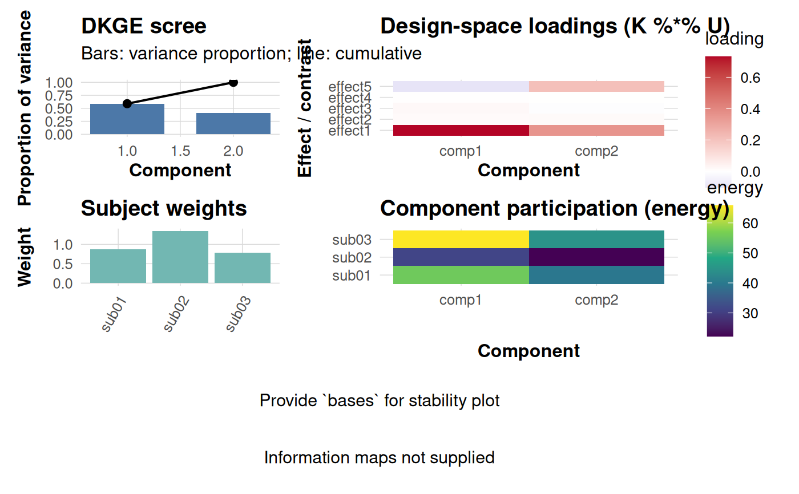

Layout helper combining the main DKGE diagnostic plots into a single patchwork canvas. Individual panels degrade gracefully when optional inputs (e.g. LOSO bases or information maps) are missing.
Usage
dkge_plot_suite(
fit,
one_se_pick = NULL,
comps = NULL,
zscore = FALSE,
bases = NULL,
consensus = NULL,
base_labels = NULL,
info_haufe = NULL,
info_loco = NULL,
top = 20,
width = 12,
height = 12,
dpi = 300,
save_path = NULL
)Arguments
- fit
Fitted `dkge` object.
- one_se_pick
Optional integer component chosen by one-SE rule.
- comps
Components to include (defaults to first min(rank,6)).
- zscore
Logical; z-score loadings within each effect.
- bases
Optional list of basis matrices (e.g. LOSO/fold bases) for the stability panel.
- consensus
Optional consensus basis for stability plotting.
- base_labels
Optional labels for the supplied bases.
- info_haufe
Optional result from [dkge_info_map_haufe()].
- info_loco
Optional result from [dkge_info_map_loco()].
- top
Number of anchors to annotate in information plots (set to 0 to disable).
- width, height
Dimensions (inches) when saving to disk.
- dpi
Resolution (dots per inch) when saving.
- save_path
Optional file path (png/pdf/svg) to save the dashboard.
Examples
toy <- dkge_sim_toy(
factors = list(A = list(L = 2), B = list(L = 3)),
active_terms = c("A", "B"), S = 3, P = 15, snr = 5
)
fit <- dkge(toy$B_list, toy$X_list, kernel = toy$K, rank = 2)
#> Warning: Argument 'kernel' is deprecated; use 'K' instead.
if (requireNamespace("patchwork", quietly = TRUE)) {
dkge_plot_suite(fit)
}
